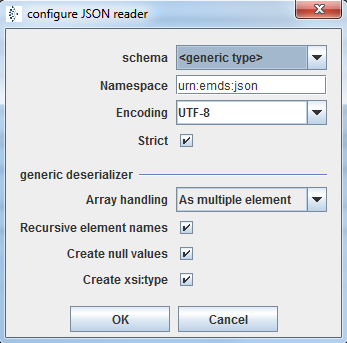

JSON reader

Topic content
Description
The JSON reader parses JSON files and creates a structured Message from it.
Creation
A JSON reader is created, like all other deserializers, by selecting it in the according Stream channel.
Configuration
The user can configure the JSON reader using the following dialog.

If the field named Schema <generic type> is selected, no type information is available. in this case you may configure the following option:
•Namespace here you may set a namesspace which then is used as default namespace of the created XML document.
•Encoding Normally JSON data is encoded in UTF-8. So in almost all cases there is no need to select another encoding her.
•If is checked, the message is checked according to RFC 4627. The following checks are performed:
▪Streams that start with the non-execute prefix, ")]}'\n".
▪Streams that include multiple top-level values. With strict parsing, each stream must contain exactly one top-level value.
▪Top-level values of any type. With strict parsing, the top-level value must be an object or an array.
▪Numbers may be NaNs or infinities.
▪End of line comments starting with // or # and ending with a newline character.
▪C-style comments starting with /* and ending with */. Such comments may not be nested.
▪Names that are unquoted or 'single quoted'.
▪Strings that are unquoted or 'single quoted'.
▪Array elements separated by ; instead of ,.
▪Unnecessary array separators. These are interpreted as if null was the omitted value.
▪Names and values separated by = or => instead of :.
▪Name/value pairs separated by ; instead of ,.
•Array handling Defines how JSON arrays are to be represented in XML. Assume we have the following JSON artefact:
"data": [{"key": "kg", "value": "Kilogramm"},{"key": "m", "value": "Meter"}]
This will be converted to the following XML, if one of the two options is selected:
oAs multiple element
<data isArrayElement="true"><key>kg</key><value>Kilogramm</value></data>
<data isArrayElement="true"><key>m</key><value>Meter</value></data>
oAs container
<data isArray="true">
<arrayElement isArrayElement="true"><key>kg</key><value>Kilogramm</value></arrayElement>
<arrayElement isArrayElement="true"><key>m</key><value>Meter</value></arrayElement>
</data>
•Recursive element names If As container is selected in , instead of the tag name <arrayElement> the the name of the attribute is used to create a tag name. So for our example the following XML is generated:
<data isArray="true">
<dataElement isArrayElement="true"><key>kg</key><value>Kilogramm</value></dataElement>
<dataElement isArrayElement="true"><key>m</key><value>Meter</value></dataElement>
</data>
•Create null values Defines how JSON null values are handled. If the check box is selected, for JSON null values an empty element is created, if the check box is not selected, no XML element will be created.
•Create xsi:type If this check box is set, the deserializer tries to find out the type of simple data values and creates an attribute with xsi:type where xsi is a prefix for the namespace http://www.w3.org/2001/XMLSchema-instance.
So if you have the JSON document { "name": "Test", "amount": 33, "size": 10.2 } the JSON reader will create the following XML:
<json xmlns="urn:emds:json" xmlns:xsd="http://www.w3.org/2001/XMLSchema" xmlns:xsi="http://www.w3.org/2001/XMLSchema-instance">
<name xsi:type="xsd:string">Test</name>
<amount xsi:type="xsd:int">33</amount>
<size xsi:type="xsd:float">10.2</size>
</json>
•In the field named Schema a FHIR schema (having the namespace http://hl7.org/fhir) can be selected.
JSON reader using a FHIR schema
In this case the message is converted to an XML document according to the FHIR specification. E.g. according to FHIR, the following JSON object: { "family": [ "Link"], "given": ["Link"] }
will be converted to this XML: <name><family value="Link"/><given value="Link"/></name>
Because this conversion depends from the XML schema, we need to import the according Schema files and then select it in the JSON reader configuration.
Note that in generic mode the deserializer will change the JSON field names to correct tag names, if the field names contain characters which are not allowed in XML. So the JSON artefact "given name" will be transformed to the tagname <given_name>.